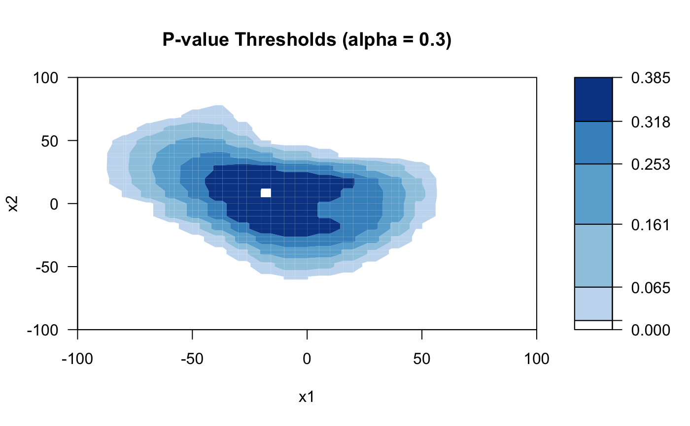
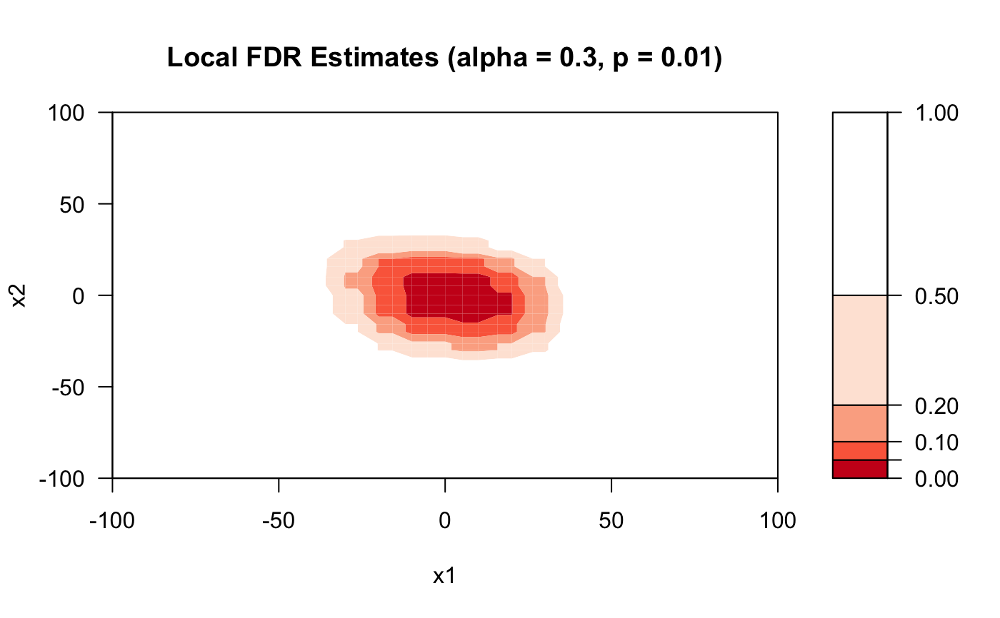

Plotting the outputs of adapt when x is 2-dimensional, including threshold curves and level curves of local FDR.
plot_2d_thresh( obj, x, pvals, alpha, title, xlab = NULL, ylab = NULL, keyaxes = list(), ... ) plot_2d_lfdr( obj, x, pvals, alpha, title, targetp, xlab = NULL, ylab = NULL, keyaxes = list(), ... )
| obj | an 'adapt' object |
|---|---|
| x | covariates (i.e. side-information). Should be compatible to |
| pvals | a vector of values in [0, 1]. P-values |
| alpha | a positive scalar in (0, 1). Target FDR level |
| title | a string. Title of the figure |
| xlab, ylab | a string. Label of x/y-axis |
| keyaxes | a list of arguments passed into axis. The graphical setting for the legend bar. An empty list by default |
| ... | other arguments passed to |
| targetp | a real in (0, 1). See Details |
The breaks in the legend of plot_2d_thresh correspond to the maximum, the 95
plot_2d_lfdr gives the contour plot of local FDR estimates when all p-values are equal to targetp. It is recommended to run plot_2d_lfdr for multiple targetp's ranging from 0.001, 0.005, 0.01, 0.05.
# \donttest{ # Generate a 2-dim x n <- 400 x1 <- x2 <- seq(-100, 100, length.out = 20) x <- expand.grid(x1, x2) colnames(x) <- c("x1", "x2") # Generate p-values (one-sided z test) # Set all hypotheses in the central circle with radius 30 to be # non-nulls. For non-nulls, z~N(2,1) and for nulls, z~N(0,1). H0 <- apply(x, 1, function(coord){sum(coord^2) < 900}) mu <- ifelse(H0, 2, 0) set.seed(0) zvals <- rnorm(n) + mu pvals <- 1 - pnorm(zvals) # Run adapt_gam with a 2d spline basis library("mgcv") formula <- "s(x1, x2)" dist <- beta_family() res <- adapt_gam(x = x, pvals = pvals, pi_formulas = formula, mu_formulas = formula, dist = dist, nfits = 5)#> alpha = 0.95: FDPhat 0.9448, Number of Rej. 181 #> alpha = 0.94: FDPhat 0.9385, Number of Rej. 179 #> alpha = 0.93: FDPhat 0.9294, Number of Rej. 170 #> alpha = 0.92: FDPhat 0.9141, Number of Rej. 163 #> alpha = 0.91: FDPhat 0.908, Number of Rej. 163 #> alpha = 0.9: FDPhat 0.8994, Number of Rej. 159 #> alpha = 0.89: FDPhat 0.8868, Number of Rej. 159 #> alpha = 0.88: FDPhat 0.879, Number of Rej. 157 #> alpha = 0.87: FDPhat 0.8654, Number of Rej. 156 #> alpha = 0.86: FDPhat 0.86, Number of Rej. 150 #> alpha = 0.85: FDPhat 0.844, Number of Rej. 141 #> alpha = 0.84: FDPhat 0.8369, Number of Rej. 141 #> alpha = 0.83: FDPhat 0.8286, Number of Rej. 140 #> alpha = 0.82: FDPhat 0.8175, Number of Rej. 137 #> alpha = 0.81: FDPhat 0.8088, Number of Rej. 136 #> alpha = 0.8: FDPhat 0.7941, Number of Rej. 136 #> alpha = 0.79: FDPhat 0.7891, Number of Rej. 128 #> alpha = 0.78: FDPhat 0.7734, Number of Rej. 128 #> alpha = 0.77: FDPhat 0.7638, Number of Rej. 127 #> alpha = 0.76: FDPhat 0.7559, Number of Rej. 127 #> alpha = 0.75: FDPhat 0.746, Number of Rej. 126 #> alpha = 0.74: FDPhat 0.7398, Number of Rej. 123 #> alpha = 0.73: FDPhat 0.7273, Number of Rej. 121 #> alpha = 0.72: FDPhat 0.7182, Number of Rej. 110 #> alpha = 0.71: FDPhat 0.7091, Number of Rej. 110 #> alpha = 0.7: FDPhat 0.7, Number of Rej. 110 #> alpha = 0.69: FDPhat 0.6827, Number of Rej. 104 #> alpha = 0.68: FDPhat 0.6796, Number of Rej. 103 #> alpha = 0.67: FDPhat 0.662, Number of Rej. 71 #> alpha = 0.66: FDPhat 0.6479, Number of Rej. 71 #> alpha = 0.65: FDPhat 0.6479, Number of Rej. 71 #> alpha = 0.64: FDPhat 0.6338, Number of Rej. 71 #> alpha = 0.63: FDPhat 0.6286, Number of Rej. 70 #> alpha = 0.62: FDPhat 0.619, Number of Rej. 63 #> alpha = 0.61: FDPhat 0.6066, Number of Rej. 61 #> alpha = 0.6: FDPhat 0.5932, Number of Rej. 59 #> alpha = 0.59: FDPhat 0.5763, Number of Rej. 59 #> alpha = 0.58: FDPhat 0.5763, Number of Rej. 59 #> alpha = 0.57: FDPhat 0.566, Number of Rej. 53 #> alpha = 0.56: FDPhat 0.5472, Number of Rej. 53 #> alpha = 0.55: FDPhat 0.5472, Number of Rej. 53 #> alpha = 0.54: FDPhat 0.5283, Number of Rej. 53 #> alpha = 0.53: FDPhat 0.5283, Number of Rej. 53 #> alpha = 0.52: FDPhat 0.5192, Number of Rej. 52 #> alpha = 0.51: FDPhat 0.5, Number of Rej. 52 #> alpha = 0.5: FDPhat 0.5, Number of Rej. 52 #> alpha = 0.49: FDPhat 0.4898, Number of Rej. 49 #> alpha = 0.48: FDPhat 0.4792, Number of Rej. 48 #> alpha = 0.47: FDPhat 0.4565, Number of Rej. 46 #> alpha = 0.46: FDPhat 0.4565, Number of Rej. 46 #> alpha = 0.45: FDPhat 0.4444, Number of Rej. 45 #> alpha = 0.44: FDPhat 0.4222, Number of Rej. 45 #> alpha = 0.43: FDPhat 0.4222, Number of Rej. 45 #> alpha = 0.42: FDPhat 0.4, Number of Rej. 45 #> alpha = 0.41: FDPhat 0.4, Number of Rej. 45 #> alpha = 0.4: FDPhat 0.4, Number of Rej. 45 #> alpha = 0.39: FDPhat 0.3864, Number of Rej. 44 #> alpha = 0.38: FDPhat 0.3636, Number of Rej. 44 #> alpha = 0.37: FDPhat 0.3636, Number of Rej. 44 #> alpha = 0.36: FDPhat 0.3488, Number of Rej. 43 #> alpha = 0.35: FDPhat 0.3488, Number of Rej. 43 #> alpha = 0.34: FDPhat 0.3333, Number of Rej. 42 #> alpha = 0.33: FDPhat 0.3171, Number of Rej. 41 #> alpha = 0.32: FDPhat 0.3171, Number of Rej. 41 #> alpha = 0.31: FDPhat 0.3077, Number of Rej. 39 #> alpha = 0.3: FDPhat 0.2895, Number of Rej. 38 #> alpha = 0.29: FDPhat 0.2895, Number of Rej. 38 #> alpha = 0.28: FDPhat 0.2632, Number of Rej. 38 #> alpha = 0.27: FDPhat 0.2632, Number of Rej. 38 #> alpha = 0.26: FDPhat 0.25, Number of Rej. 36 #> alpha = 0.25: FDPhat 0.25, Number of Rej. 36 #> alpha = 0.24: FDPhat 0.2333, Number of Rej. 30 #> alpha = 0.23: FDPhat 0.2222, Number of Rej. 27 #> alpha = 0.22: FDPhat 0.2, Number of Rej. 25 #> alpha = 0.21: FDPhat 0.2, Number of Rej. 25 #> alpha = 0.2: FDPhat 0.2, Number of Rej. 25 #> alpha = 0.19: FDPhat 0.1818, Number of Rej. 22 #> alpha = 0.18: FDPhat 0.1429, Number of Rej. 21 #> alpha = 0.17: FDPhat 0.1429, Number of Rej. 21 #> alpha = 0.16: FDPhat 0.1429, Number of Rej. 21 #> alpha = 0.15: FDPhat 0.1429, Number of Rej. 21 #> alpha = 0.14: FDPhat 0.1111, Number of Rej. 18 #> alpha = 0.13: FDPhat 0.1111, Number of Rej. 18 #> alpha = 0.12: FDPhat 0.1111, Number of Rej. 18# Plots plot_2d_thresh(res, x, pvals, 0.3, "P-value Thresholds (alpha = 0.3)")plot_2d_lfdr(res, x, pvals, 0.3, "Local FDR Estimates (alpha = 0.3, p = 0.01)", 0.01)# }